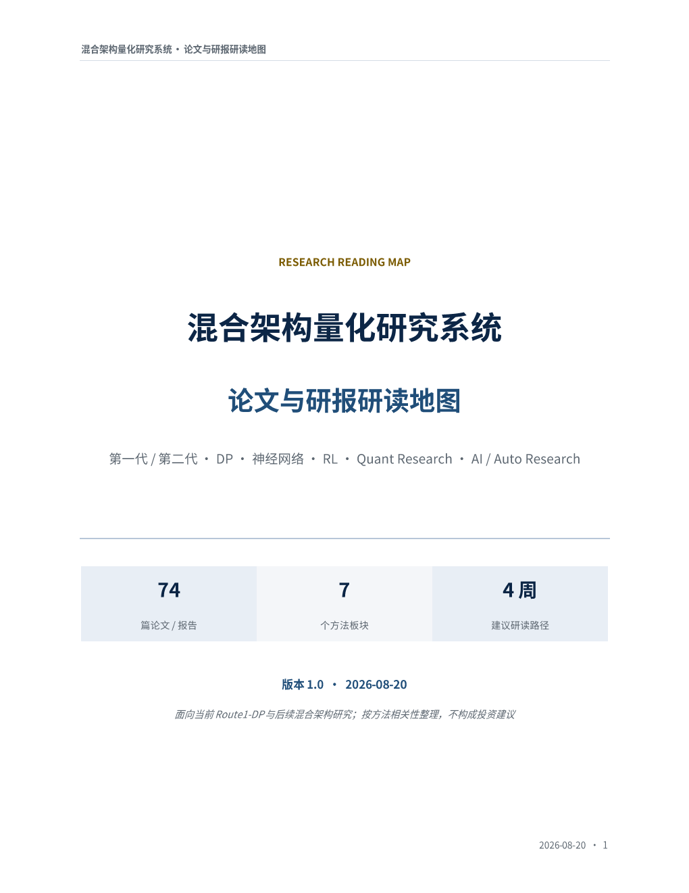

混合架构量化研究系统
本库保留原文中的第一代 / 第二代架构映射、A/B/C 阅读优先级、四周主线，以及逐篇“方法、系统映射、研读重点”。新增 GP / AST / Emitter 专题已先与原库去重；本地 PDF 可直接复制链接给网页版 GPT，暂未获得公开全文的条目提供正式来源页。

-论文与研报条目
-站内可读 PDF
-仅原始来源页
-任务导览模块
四周主线与专题补充
论文与研报条目
正在加载索引…
围绕混合架构量化研究系统，把论文与券商研报组织成可执行的任务导览：从系统边界、搜索、表示和控制，延伸到 GP / AST 程序进化、Emitter、研究智能体与统计防线。
本库保留原文中的第一代 / 第二代架构映射、A/B/C 阅读优先级、四周主线，以及逐篇“方法、系统映射、研读重点”。新增 GP / AST / Emitter 专题已先与原库去重；本地 PDF 可直接复制链接给网页版 GPT，暂未获得公开全文的条目提供正式来源页。

正在加载索引…